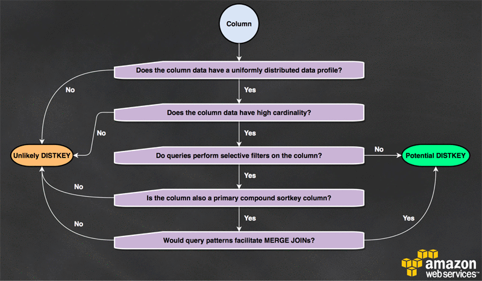

Redshift
Best Practices
COPY Data from multiple, evenly sized files
- When loading multiple files into a single table, use a single COPY command for the table, rather than multiple COPY commands.
- Amazon Redshift automatically parallelizes the data ingestion.
- Using a single COPY command to bulk load data into a table ensures optimal use of cluster resources, and quickest possible throughput.
- A COPY command is the most efficient way to load a table.
- You can also add data to your tables using INSERT commands, though it is much less efficient than using COPY.
- The COPY command is able to read from multiple data files or multiple data streams simultaneously.
- Amazon Redshift allocates the workload to the cluster nodes and performs the load operations in parallel, including sorting the rows and distributing data across node slices.
The COPY command leverages the Amazon Redshift massively parallel processing (MPP) architecture to read and load data in parallel from files in an Amazon S3 bucket. You can take maximum advantage of parallel processing by splitting your data into multiple files and setting distribution keys on your tables.
If you use multiple concurrent COPY commands to load one table from numerous files, Amazon Redshift is forced to perform a serialized load. This type of load is much slower and requires a VACUUM process at the end in the case that the table has a sort column defined. So, use a single COPY command that allows Redshift to employ MPP to read & load data in parallel from files in an Amazon S3 Bucket.
Furthermore, AWS recommends that you efficiently update and insert new data and load data into a staging table first. Use temporary staging tables to hold the data for transformation. These tables are automatically dropped after the ETL session is complete. Temporary tables can be created using the CREATE TEMPORARY TABLE syntax, or by issuing a SELECT … INTO #TEMP_TABLE query. Explicitly specifying the CREATE TEMPORARY TABLE statement allows you to control the DISTRIBUTION KEY, SORT KEY, and compression settings to improve performance further.
You can use a manifest to ensure that the COPY command loads all of the required files, and only the required files, for a data load. This can also be used to load files from different buckets or files that do not share the same prefix. Instead of supplying an object path for the COPY command, you supply the name of a JSON-formatted text file that explicitly lists the files to be loaded. The URL in the manifest must specify the bucket name and full object path for the file, not just a prefix.
Use WLM (Workload Management)
Use Amazon Redshift’s workload management (WLM) to define multiple queues dedicated to different workloads (for example, ETL versus reporting) and to manage the runtimes of queries. As you migrate more workloads into Amazon Redshift, your ETL runtimes can become inconsistent if WLM is not appropriately set up.
Perform Table Maintenance regularly
Amazon Redshift is a columnar database, which enables fast transformations for aggregating data. Performing regular table maintenance ensures that transformation ETLs are predictable and performant. To get the best performance from your Amazon Redshift database, you must ensure that database tables regularly are VACUUMed and ANALYZEd.
Perform multiple steps in a single transaction
ETL transformation logic often spans multiple steps. Because commits in Amazon Redshift are expensive, if each ETL step performs a commit, multiple concurrent ETL processes can take a long time to execute.
Loading Data in Bulk
Amazon Redshift is designed to store and query petabyte-scale datasets. Using Amazon S3 you can stage and accumulate data from multiple source systems before executing a bulk COPY operation.
The following methods allow efficient and fast transfer of these bulk datasets into Amazon Redshift:
- Use a manifest file to ingest large datasets that span multiple files. The manifest file is a JSON file that lists all the files to be loaded into Amazon Redshift. Using a manifest file ensures that Amazon Redshift has a consistent view of the data to be loaded from S3, while also ensuring that duplicate files do not result in the same data being loaded more than one time.
- Use temporary staging tables to hold the data for transformation. These tables are automatically dropped after the ETL session is complete. Temporary tables can be created using the CREATE TEMPORARY TABLE syntax, or by issuing a SELECT … INTO #TEMP_TABLE query. Explicitly specifying the CREATE TEMPORARY TABLE statement allows you to control the DISTRIBUTION KEY, SORT KEY, and compression settings to further improve performance.
- Use ALTER table APPEND to swap data from the staging tables to the target table. Data in the source table is moved to matching columns in the target table. Column order doesn’t matter. After data is successfully appended to the target table, the source table is empty. ALTER TABLE APPEND is much faster than a similar CREATE TABLE AS or INSERT INTO operation because it doesn’t involve copying or moving data.
Use Redshift Spectrum for ad hoc ETL processing
- When you partition your data, you can restrict the amount of data that Redshift Spectrum scans by filtering on the partition key.
- You can partition your data by any key. A common practice is to partition the data based on time.
Backups
- To create a point-in-time backup of a cluster, you can use a snapshot.
- There are two types of snapshots: automated and manual.
- The backups you will create are stored in an Amazon S3 bucket.
Automated Snapshot
- If an automated snapshot is enabled, Amazon Redshift will take a snapshot every eight hours or following every 5 GB per node of data changes, or whichever comes first.
Manual Snapshot
- A manual snapshot can be taken at any time.
- By default, manual snapshots are retained indefinitely, even after you delete your cluster.
Best Practices
- Distribute the fact table and one dimension table on their common columns.
- Your fact table can have only one distribution key.
- Any tables that join on another key aren't collocated with the fact table.
- Choose one dimension to collocate based on how frequently it is joined and the size of the joining rows.
- Designate both the dimension table's primary key and the fact table's corresponding foreign key as the DISTKEY.
- Choose a column with high cardinality in the filtered result set.
- If you distribute a sales table on a date column, for example, you should probably get fairly even data distribution, unless most of your sales are seasonal.
- However, if you commonly use a range-restricted predicate to filter for a narrow date period, most of the filtered rows occur on a limited set of slices and the query workload is skewed.
- Choose the largest dimension based on the size of the filtered dataset.
- Change some dimension tables to use ALL distribution.
Table Distribution Style
A table might be defined with a DISTSTYLE of EVEN, KEY, or ALL.
- EVEN will do a round-robin distribution of data.
- KEY requires a single column to be defined as a DISTKEY. On ingest, Amazon Redshift hashes each DISTKEY column value, and route hashes to the same slice consistently.
- ALL distribution stores a full copy of the table on the first slice of each node.
Which style is most appropriate for your table is determined by several criteria. 